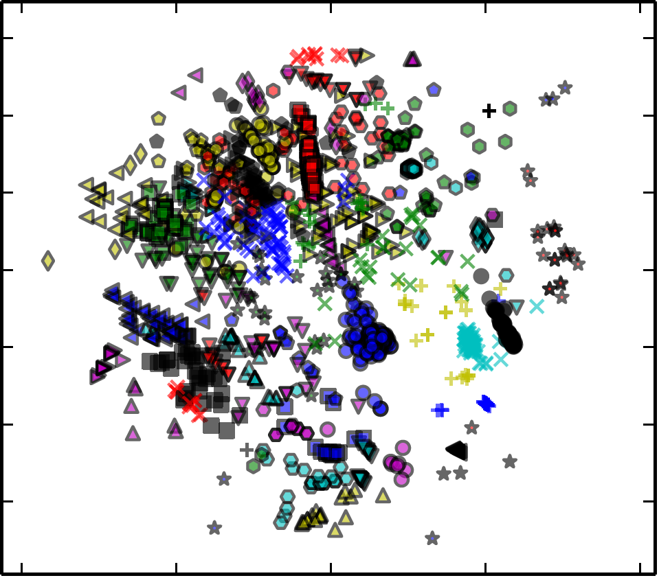

Tools
|  |
ALORS: An algorithm recommender system is a collaborative filtering based algorithm selection system. A main contribution of ALORS system is to handle the cold start problem – emitting recommendations for a new problem instance – through the non-linear modeling of the latent factors based on the initial instance representation.
Tool: https://www.lri.fr/~sebag/Alors/ Report: http://www.sciencedirect.com/.../article/pii/S0004370216301436 |
|
|
Automated Algorithm Portfolio DeVISER (ADVISER+) is a web-based system that combines the concepts of algorithm configuration, selection, and portfolio generation.
Tool: http://research.larc.smu.edu.sg/adviserplus/ Report: https://mustafamisir.github.io/papers/MIC2017_paper_153.pdf |
||
|
Automated Algorithm Portfolio DeVISER (ADVISER) is an earlier version of ADVISER+, purely focusing on algorithm portfolios using non/-parameteric algorithms.
Tool: http://research.larc.smu.edu.sg/adviser/ Report: http://research.larc.smu.edu.sg/adviser/report.pdf |
||
|
Generic Intelligent Hyper-heuristic (GIHH) is an award-wining selection hyper-heuristic designed for generality. GIHH is equipped with multiple online adaptive hyper-heuristic procedures and decision mechanisms for simultaneously coordinating them. It is expected to evolve for different search environments without human intervention.
Tool: https://code.google.com/archive/p/generic-intelligent-hyper-heuristic/ Report: https://lirias.kuleuven.be/.../358281/3/PhDDissertation-MMISIR.pdf |